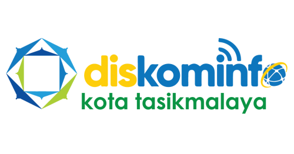
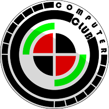

Riwayat Pendidikan, Pengalaman & Organisasi
Universitas Perjuangan
2021 – 2025
Teknik Informatika | IPK: 3.74

Fullstack Web Developer – MSIB Batch 6
Desember 2023 – April 2024
Mendalami pengembangan website berbasis Laravel & API.

Web Developer – Magang Diskominfo Tasikmalaya
April 2025 – Juni 2025
- Mengembangkan dan memperbaiki tampilan antarmuka website pemerintahan menggunakan React.js.
- Mengimplementasikan desain responsif agar aplikasi web dapat diakses dengan optimal di berbagai perangkat.
- Mendukung pembuatan dokumentasi teknis untuk kebutuhan pemeliharaan dan pengembangan sistem lanjutan.
- Menerapkan autentikasi berbasis JWT (JSON Web Token) menggunakan Laravel untuk mengamankan proses login dan akses API.

Computer Club
2021 – 2023
- Bertanggung jawab sebagai koordinator dalam perencanaan kegiatan organisasi.
- Memastikan kegiatan berjalan sesuai rencana dan jadwal yang telah ditetapkan.
- Mengoordinasikan tim serta pelaksanaan program kerja hingga kegiatan selesai.